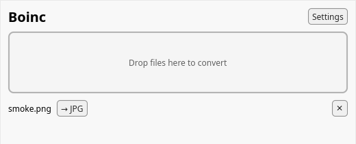

How it works
-
Right-click a file
Boinc appears in the menu of every file it can convert — and only those.
-
Pick the target format
Only valid conversions are offered. A PNG shows Convert to JPG, nothing else.
-
Done
The converted copy lands next to the original. Boinc never overwrites your files — a second convert becomes
photo (1).jpg.
What it converts
PNG⇄JPGBoth directions, out of the box. Transparency is flattened onto a background color you choose; JPEG quality is configurable.
PDF⇄DOCXBoth directions, powered by LibreOffice when it's installed. No LibreOffice — no menu entry; Boinc doesn't offer what it can't do.
Under the hood every conversion is a plug-in against one small engine, so new formats join the menu without redesigning anything.
There's an app, too
The tray application handles everything the menu doesn't: drop in files, queue big batches, watch progress, pause, and get a desktop notification when each file is ready.
- Drag & drop any convertible file
- Sequential queue with per-file progress
- Default output folder and JPEG quality in Settings
- Start at login, sit in the tray

Downloads
Latest release, straight from GitHub.
After installing, open Boinc once — it sets up the right-click menu for
your user account. boinc integrate uninstall removes it just as cleanly.
Questions, answered
Do my files get uploaded somewhere?
No. Boinc is a desktop program; conversions run entirely on your computer. This website's only job is to hand you the installer.
Why don't I see PDF → DOCX in my menu?
Document conversions use LibreOffice as their engine. Install LibreOffice, open Boinc once, and the entries appear.
Can it overwrite my original?
Never. The original stays untouched and the copy gets a free name —
report.pdf becomes report.docx, or report (1).docx
if that name is taken.
Can I convert many files at once?
Yes — select several files before right-clicking (Linux), drop a batch on the app window,
or use the CLI: boinc convert *.png --to jpg.
Is it really free?
MIT-licensed, source on GitHub. No account, no tier, no "3 conversions per day".